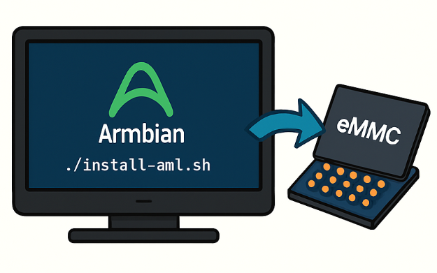

Mais o que é o processo de descaractertização?
A descaracterização é, em poucas palavras, o processo de substituir o sistema original
que vem integrado à TV Box por um sistema baseado em Linux,
adaptando o aparelho para funcionar como um mini computador.
Baixe a imagem do Armbian, descompacte e grave-a no microSD.
Lembre-se de editar o arquivo extlinux.conf e renomear o u-boot-s905x.ext.
Com o TV Box desligado, insira cuidadosamente o cartão microSD já preparado.
Use o clipe de papel ou palito para pressionar e segurar o botão de reset interno (localizado na porta AV).
Mantenha o botão pressionado enquanto conecta o cabo de energia. Solte após 5 a 7 segundos.
Aguarde o sistema Armbian carregar na sua TV. O primeiro boot pode demorar um pouco.
Acesse o Terminal: Abra o terminal no Armbian.
Obtenha Privilégios de Administrador: Digite su
Navegue até o Diretório de Instalação: cd /root
Execute o Script de Instalação: ./install-aml.sh

Desligar TvBox
Remover cartão
Ligar Novante
Sucesso! Seu TvBox com sistema Linux está pronto para ser utilizado!